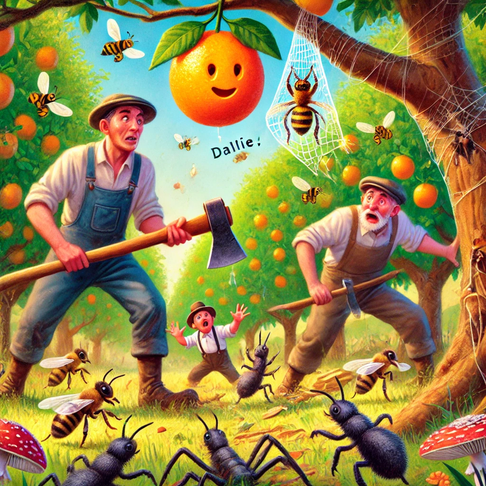

Once upon a time, in a sunny orchard, there lived a young orange named Ollie. Ollie was full of dreams and aspirations. He wanted to grow up to be the juiciest orange in the orchard. He watched as other oranges were picked and taken away, but he knew he had a long way to go before he could be picked. But he was happy hanging on his branch, soaking in the sun and listening to the other fruits chatter.
One day, as Ollie enjoyed his sunny spot, a strong wind began to blow. “Oh no!” he exclaimed as the branches swayed back and forth. The world around him became a whirlwind of colors and sounds. Ollie felt a bit scared, but he didn’t want to fall; he wanted to grow big and juicy!
Just as Ollie clung tighter to his branch, he noticed a shadow passing overhead. It was DALL·E, a clever and adventurous bee who loved helping others. DALL·E had been gathering nectar from flowers when he noticed Ollie in trouble. Without hesitating, he zoomed over to the tree.
“Hold on, Ollie! I’ve got an idea!” DALL·E shouted, circling around the tree. He quickly flew over to a nearby spider, a friendly garden helper named Spinella. “Spinella, we need your web! Can you help?” DALL·E explained the situation in a flash.
Spinella agreed and started weaving a strong, sticky web between the branches, creating a net under Ollie. With DALL·E’s guidance, the web was secured just in time, right before Ollie could fall. The net caught him gently, saving him from hitting the hard ground.
Ollie sighed in relief. “Thank you, DALL·E! You and Spinella saved me!”
DALL·E buzzed happily. “That’s what friends are for, Ollie! Now you can hang here safely until you're truly ready to be picked.”
But just when everything seemed calm, Ollie heard a new noise. Heavy footsteps. Two men appeared at the edge of the orchard, carrying large axes over their shoulders.
“I think this tree has lived long enough,” one of them grumbled. “It doesn’t bear as much fruit as it used to. Time to chop it down.”
Ollie’s heart raced. "They want to cut down my tree!" he whispered, trembling. He wasn’t ready to leave yet—there was still so much more time he needed to ripen fully! DALL·E heard the voices too, and he zipped up to Ollie’s side.
“Don’t worry, Ollie, I’ll think of something,” DALL·E said determinedly. The bee then flew down and buzzed around the two men, darting close to their faces to distract them. The men swatted at DALL·E, annoyed.
But DALL·E wasn’t alone. Spinella crawled quickly along her web, silently summoning the other insects and creatures of the orchard. Soon, a whole army of bees, butterflies, and even ants were working together to protect the tree.
Just as the men raised their axes, the ground beneath them began to tremble. Out of nowhere, a family of moles popped up, causing the men to stumble. With bees buzzing in their ears and the ground shifting under their feet, the men got spooked.
“This tree’s too much trouble!” one of the men finally shouted. “Let’s leave it for now!”
And just like that, they dropped their axes and hurried away.
Ollie sighed in relief once more. “Thank you, DALL·E! You and all the others saved the tree!”
DALL·E buzzed proudly, hovering next to Ollie. “The orchard is full of life, Ollie. And we protect each other!”
Ollie realized then that even the smallest creatures could make a big difference. With his new friends, the tree was safe, and Ollie could continue to grow.